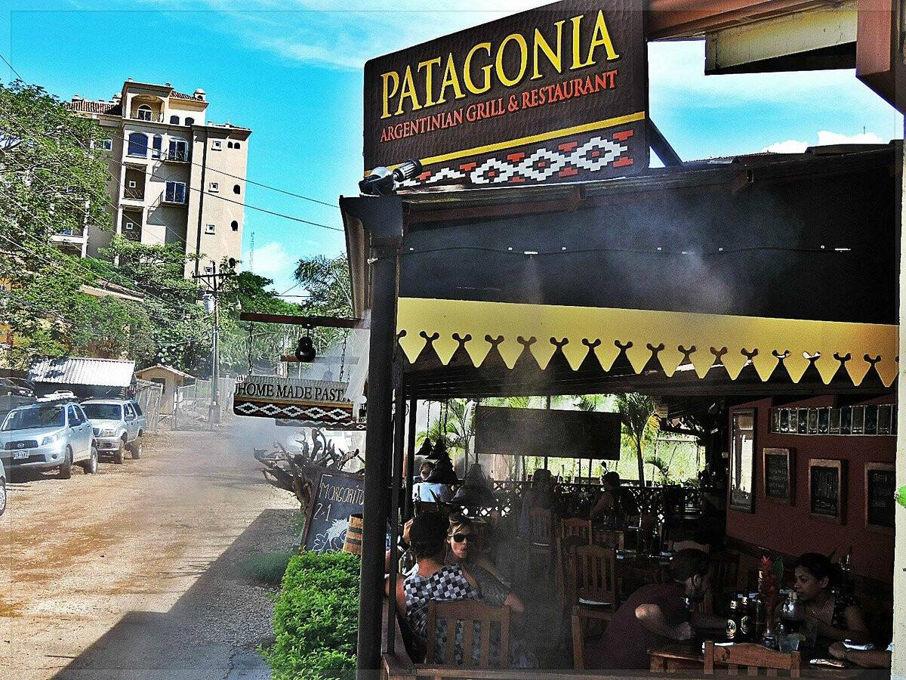
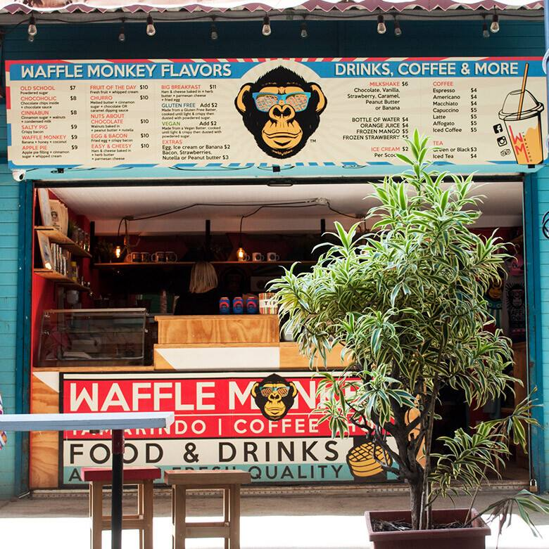

Café Tico
Nestled in the heart of Tamarindo, Cafe Tico offers a delicious journey through the flavors of Costa Rica. With a menu inspired by…

Dragonfly Bar & Grill
Situated in the heart of Tamarindo, Dragonfly Bar and Grill is a culinary oasis where flavors from around the world come together …

El Chiringuito
El Chiringuito is a popular restaurant located in the heart of Tamarindo, Costa Rica, known for its vibrant and laid-back atmosphe…

Fish & Cheeses Italian Restaurant
Located in Langosta, Costa Rica, Fish and Cheeses Italian Restaurant offers a delightful fusion of traditional Italian flavors wit…

Green Papaya Taco Bar
Nestled in the heart of Tamarindo, Costa Rica, Green Papaya Taco Bar invites diners on a culinary journey to Mexico, where vibrant…

Jardín Tamarindo Food Truck Park
Nestled amidst the vibrant streets of Tamarindo, the Food Truck Park stands as a testament to the town's culinary diversity and vi…

Ocho Beach Club
Nestled in the vibrant coastal town of Tamarindo, Ocho invites diners on a journey of culinary exploration, celebrating the rich t…
Pangas Beach Club
Pangas Beach Club in Tamarindo, Costa Rica, is a renowned dining destination that offers a unique blend of gourmet cuisine and a r…

Patagonia Argentinian Grill & Restaurant
Nestled in the vibrant coastal town of Tamarindo, Costa Rica, Patagonia Argentinian Grill & Restaurant offers a tantalizing culina…

Waffle Monkey
Waffle Monkey in Tamarindo, Costa Rica, offers a delightful twist on the traditional waffle experience. With a creative menu featu…